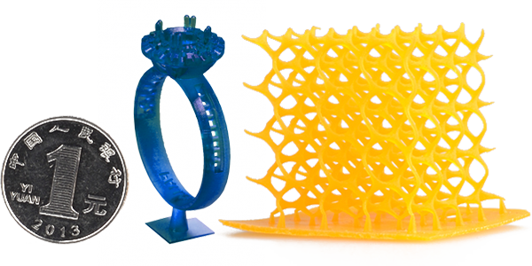

Стандартний FDM друк:
Одна за найпоширеніших і простіших технологій 3D друку.
Саме вона є найбільш бюджетною і доступною у всіх планах.
FDM друк вельми успішний, але незрівнянний з друком на
спеціалізованному обладнанні.
Переваги FDM:
- Доступність
- Великий вибір матерівлів
- Співвідношення ціна/якість
Метод пошарового наплавлення:
Технологія дозволяє створювати вироби з широкого спектру матеріалів з різними характеристиками і властивостями.
Висота шару:
- 0,1-0,3 мм. (100-300 мікрон)
Область друку:
- до 600х600х600 мм

| Матеріал/Висота шару | Стандартна якість 300 мікрон | Оптимальна якість 200 мікрон | Висока якість 100 мікрон |
| Стандартні (ABS, PLA) | 4,1 грн/грам | 5,9 грн/грам | 11,3 грн/грам |
| Високоточні та ударостійкі | від 4,5 грн/грам | від 6,3 грн/грам | від 11,7 грн/грам |
| Гнучкі та резиноподібні | від 5,4 грн/грам | від 7,2 грн/грам | від 12,6 грн/грам |
| Декоративні і спеціальні | від 5,1 грн/грам | від 6,9 грн/грам | від 12,3 грн/грам |
Високоточний SLA i DLP друк:
Надточний метод створення виробу:
Надточний метод створення виробу шляхом затрердіння фотополімерної смоли під впливом УФ-випромінювання. Застосовується для створення ювелірних виробів, надточних прототипів, предметів складної геометрії, мастер-моделей для лиття.
Висота шару:
- від 0,027 до 0,05мм
Область друку:
- від 30х50х150мм(ювелірна) до 215х135х200мм.(технічна)
Ціна формується виходячи з багатьох факторів, таких як вага, час друку, вид фотополімерної смоли та інших. Для точної оцінки вартості виробу треба надіслати нам 3D модель в форматі .STL або .OBJ.
| Матеріал/Висота шару | 50 мікрон | 35 мікрон | 27 мікрон |
| Фотополімер стандартний | від 14 грн/грам | від 20 грн/грам | від 24 грн/грам |
| Фотополімер підвищеної точності | від 18 грн/грам | від 26 грн/грам | від 31 грн/грам |